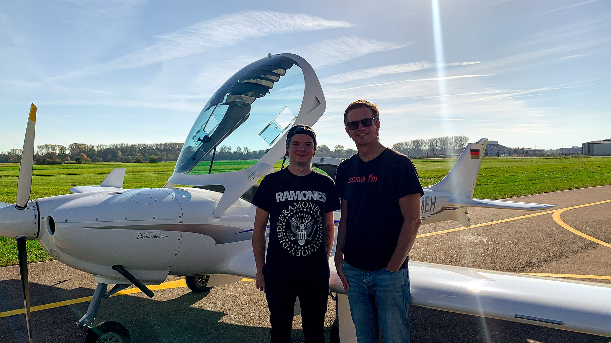

My Interests Beyond Work
I love exploring new things: building side projects, traveling the world, jamming on the bass guitar, attending concerts and festivals, hitting the slopes, and even taking flying lessons. In short, I’m all about trying new tech and adventures wherever I go.


